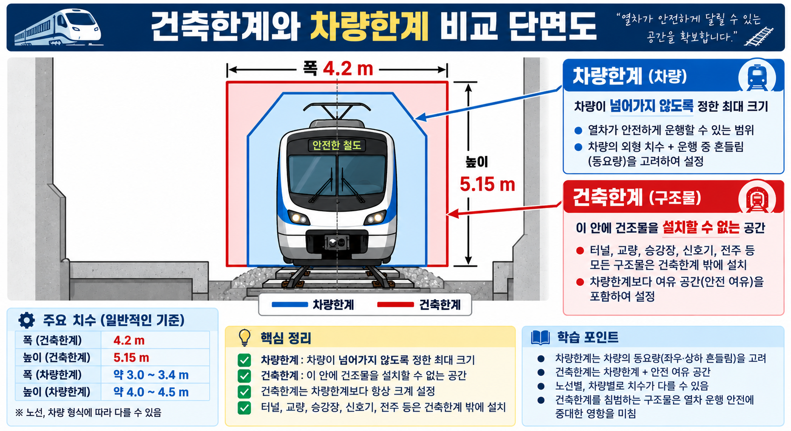

§1. 핵심 용어정의
용어정의 | 건축한계(建築限界, Structure Gauge)
열차의 안전한 운행을 보장하기 위해, 선로 주변의 구조물이나 설비가 절대로 침범해서는 안 되는 공간의 경계선. 레일 상면을 기준으로 폭과 높이로 규정한다.
용어정의 | 차량한계(車輛限界, Rolling Stock Gauge)
철도차량이 운행할 때 점유할 수 있는 최대 공간의 경계선. 차량이 이 선 바깥으로 나와서는 안 된다.
용어정의 | 캔트(Cant)
곡선 구간에서 열차가 받는 원심력을 줄이기 위해, 바깥쪽 레일을 안쪽 레일보다 높게 설치한 높이 차이. 단위는 mm.
용어정의 | 슬랙(Slack)
곡선 구간에서 차량의 바퀴가 원활하게 회전할 수 있도록, 안쪽 레일을 바깥쪽으로 약간 밀어 궤간(두 레일 사이의 거리)을 넓히는 것. (건축한계 확대와는 무관)
용어정의 | 편기(偏倚)
곡선 구간에서 차체가 선로 중심선에서 내측 또는 외측으로 돌출되는 현상. 차체 자체는 직선 형태이지만 선로는 곡선이기 때문에, 차체의 앞·뒤·중간 부분이 선로 중심으로부터 서로 다른 거리에 위치하게 된다.
§2. 건축한계·차량한계 비교 (SOURCE 16)
직선구간의 건축한계는 철도건설규칙 별표 2의 단면도에 따르며, 4,200mm 등의 횡방향 치수와 시설·전철조건에 따른 복수의 수직 치수로 구성된다.

VIS-033 건축한계·차량한계 비교도 (SOURCE 16·22)
| 항목 | 정의 | 수치 |
|---|
| 건축한계 | 구조물·설비가 침범할 수 없는 한계 공간 | 횡방향 4,200mm 등 (철도건설규칙 별표 2 단면도에 따름), 조건별 복수 수직 치수 적용 |
| 차량한계 | 차량이 점유할 수 있는 최대 공간 범위 | 건축한계보다 작음 |
| 대소 관계 | 건축한계 > 차량한계 (반드시 성립) | — |
절대 오답 선지
X"차량한계 > 건축한계" → 오답. 구조물이 차량보다 넓은 공간을 확보해야 안전하므로 반드시 건축한계 > 차량한계.
X"건축한계 = 차량의 점유 공간 범위" → 오답. 차량의 점유 공간 범위는 차량한계의 정의이다.
§3. 곡선부 건축한계 확대 (SOURCE 22)
곡선 구간에서는 두 가지 별개 현상이 차량의 점유 공간을 늘려, 건축한계를 직선 구간보다 확대해야 한다.
① 편기에 의한 점유 공간 증가
차체는 직선이지만 선로는 곡선이므로, 차체 중간 부분이 곡선의 안쪽으로 돌출되고 차체 양 끝이 바깥쪽으로 벌어진다. 이 돌출 범위만큼 내측과 외측 모두 여유 공간이 더 필요하다.
② 캔트에 의한 차량 기울어짐
바깥쪽 레일을 높임으로써 차체 전체가 안쪽(내측)으로 기울어진다. 차체가 기울면 차체 상부가 내측으로 더 들어오므로 내측 여유 공간이 추가로 필요하다.
| 현상 | 원인 | 건축한계에 미치는 영향 |
|---|
| 편기 | 직선 차체 + 곡선 선로의 기하학적 관계 | 내·외측 모두 공간 증가 |
| 캔트 기울어짐 | 외측 레일 높임 → 차체 내측 경사 | 내측 공간 추가 증가 |
| 슬랙 | 궤간 확대 | 건축한계 확대와 무관 ← 시험 함정 |
오답 선지 판별
X"곡선부 건축한계 확대 이유 = 슬랙 때문" → 오답. 슬랙은 궤간 확대일 뿐, 건축한계 확대 이유가 아님.
X"건축한계 확대 = 진동·소음 원인" → 오답. 건축한계 확대는 소음·진동과 무관.
O곡선부 건축한계 확대 이유 2가지: 편기 + 캔트 기울어짐
§4. 핵심암기
암기 공식
건축한계: 구조물 침범 금지 공간 (횡방향 4,200mm 등 — 철도건설규칙 별표 2에 따름)
차량한계: 차량 최대 점유 공간
건축한계 > 차량한계 (절대 규칙)
곡선부 건축한계 확대 이유 (2가지):
① 편기: 직선 차체가 곡선 선로에서 내·외측으로 돌출
② 캔트 기울어짐: 차체가 내측으로 기울어 내측 공간 증가
→ 슬랙은 이유가 아님 (시험 함정)
§5. 시험포인트
핵심 ①
건축한계 > 차량한계 — 구조물은 차량보다 더 넓은 공간을 확보해야 한다.
함정 ①
건축한계 = "차량이 점유할 수 있는 최대 공간 범위" → 오답. 그것은 차량한계의 정의.
핵심 ②
곡선부 건축한계 확대 이유: 편기 + 캔트 기울어짐 (슬랙은 이유가 아님).
함정 ②
"슬랙으로 인해 곡선부 건축한계를 확대한다" → 오답. 슬랙은 궤간 확대 목적이며 건축한계와 무관.
§6. 문제 연결
4지선다형 · [Q] engineering id:8
Q1.
건축한계에 관한 설명으로 옳은 것은?
- ① 차량이 점유할 수 있는 최대 공간 범위
- ② 구조물이 침범할 수 없는 공간 범위
- ③ 레일 상면을 기준으로 한 곡선부 궤간 확대량
- ④ 선로 중심 간 최소 간격
4지선다형 · [Q] engineering id:57
Q2.
곡선 구간에서 건축한계를 확대해야 하는 이유는?
- ① 캔트 설정으로 레일 높이 차이 발생
- ② 슬랙으로 인한 궤간 감소
- ③ 차체의 편기(偏倚)와 캔트에 의한 차량 점유 공간 증가
- ④ 원심력으로 레일이 외측으로 이동
4지선다형 · [Q] engineering id:30
Q3.
곡선부에서 건축한계를 확대하는 이유로 옳지 않은 것은?
- ① 편기에 의해 차체 내·외측으로 돌출 공간이 늘어나기 때문
- ② 캔트에 의해 차체가 내측으로 기울어지기 때문
- ③ 슬랙으로 인해 궤간이 넓어지기 때문
- ④ 차량 점유 공간이 직선 구간보다 커지기 때문
정답 및 해설
Q1 정답 ②
② 구조물이 침범할 수 없는 공간 범위가 건축한계의 정의이다. ①은 차량한계의 정의이다. ③④는 건축한계와 무관한 설명이다.
TRAP: "차량이 점유할 수 있는 최대 공간 범위" = 차량한계. 건축한계와 혼동하지 말 것.
Q2 정답 ③
③ 차체의 편기와 캔트에 의한 차량 점유 공간 증가가 정답이다. 편기는 직선 차체가 곡선 선로에서 내·외측으로 돌출되는 현상이고, 캔트는 차체를 내측으로 기울여 내측 점유 공간을 증가시킨다.
TRAP: 슬랙은 궤간 확대 목적이며 건축한계 확대와 무관. ① 캔트는 이유가 맞지만 단독으로는 불완전하고, ③처럼 편기+캔트 두 가지를 모두 포함해야 완전한 정답.
Q3 정답 ③
③ 슬랙으로 인해 궤간이 넓어지기 때문은 건축한계 확대 이유가 아니다. 슬랙은 곡선부에서 바퀴의 원활한 회전을 위해 궤간을 확대하는 것으로, 건축한계 확대 이유와는 무관하다. ①②④는 모두 건축한계 확대의 올바른 이유이다.
TRAP: 슬랙 = 궤간 확대 → 건축한계 확대 이유 아님. 자주 출제되는 오답 선지.